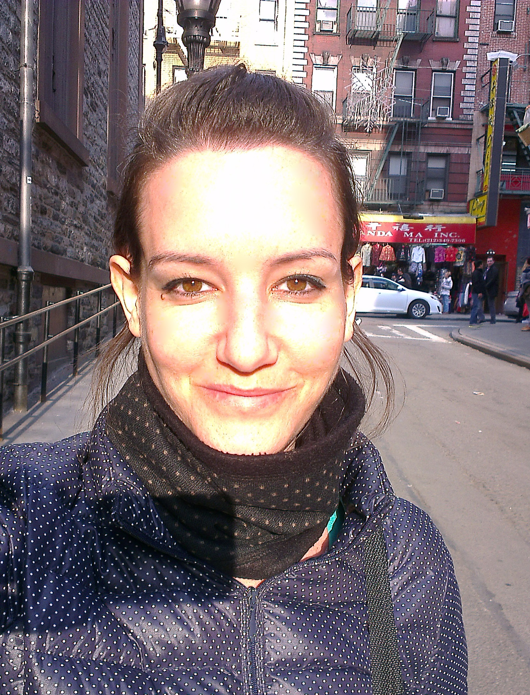

I am a doctoral candidate at UW-Madison, currently working on my dissertaion.
My research interests reside within the Bermuda triangle of social psychology, media effects and emotions, with a focus on social cognition and the underlying psychological mechanisms of information processing.
More specifically, I am interested in perception biases that lead people to interpret the same information differently, and how those cognitive process influence behavior, personal judgment and decision-making.
I examine these cognitive processes under varied contexts and theoretical frameworks such as psychology of emotions, group identity, selective exposure, visual & nonverbal communication, impression formation and attitude change.
I obtained an M.A. degree in Communication Research and a double B.A major in Communication & Fine Arts from the University of Haifa, Israel. I also received a diploma in "Graphic Design for Web & Marketing" from the John Bryce College in Tel-Aviv, Israel and I have been working as a graphic designer since 2008.
My full CV is available here.